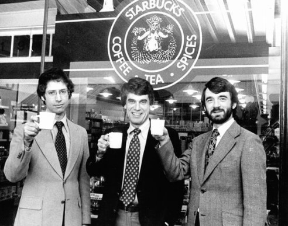
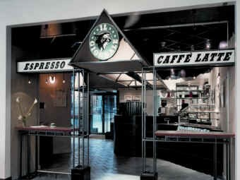
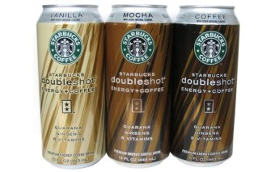

Starbucks 기업정보
[스타벅스의 역사]스타벅스 창업자인 고든 보커(좌), 제럴드 제리 볼드윈(중앙), 지브 시글(우)(1971)

- 1971~1987 : 설립 이후 ~ 하워드 슐츠의 인수
- 1985~1987 : 일 지오날레의 설립 ~ 하워드 슐츠의 스타벅스 인수
- 1987~2008 : 하워드 슐츠의 스타벅스 인수 ~ 하워드 슐츠의 CEO 복귀 이전
- 2008~2013 : 하워드 슐츠의 복귀 ~ 사업영역 확대

[일 지오날레(il Giornale) 매장 전경]하워드 슐츠가 스타벅스를 프랜차이즈하기 전 설립한 또다른 커피 프랜차이즈 브랜드

[스타벅스 더블샷 커피캔(초기)]스타벅스와 펩시코의 합작회사인 '북미 커피 파트너십'에서 출시되었다.